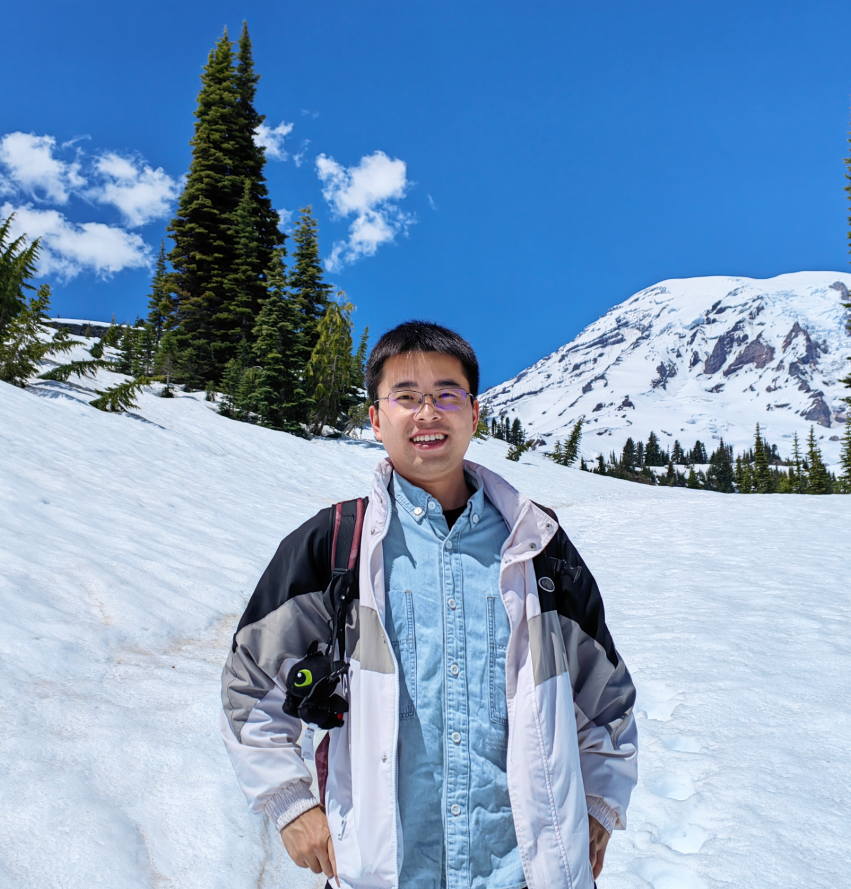
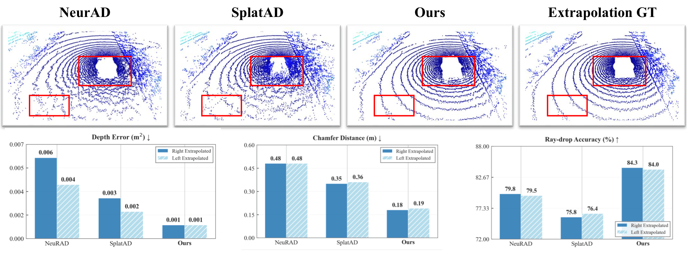
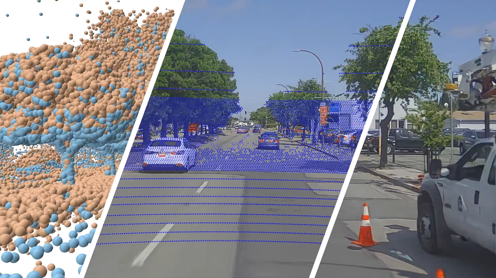
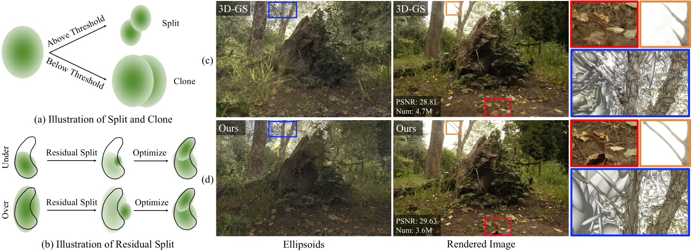
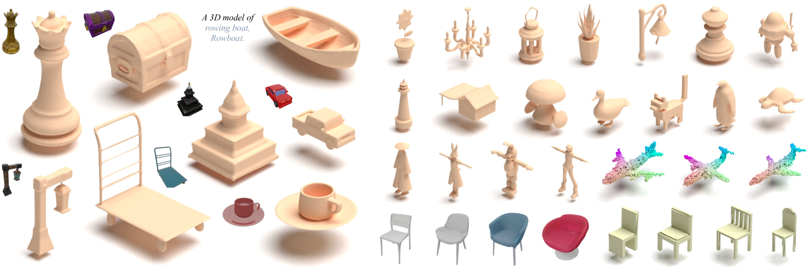
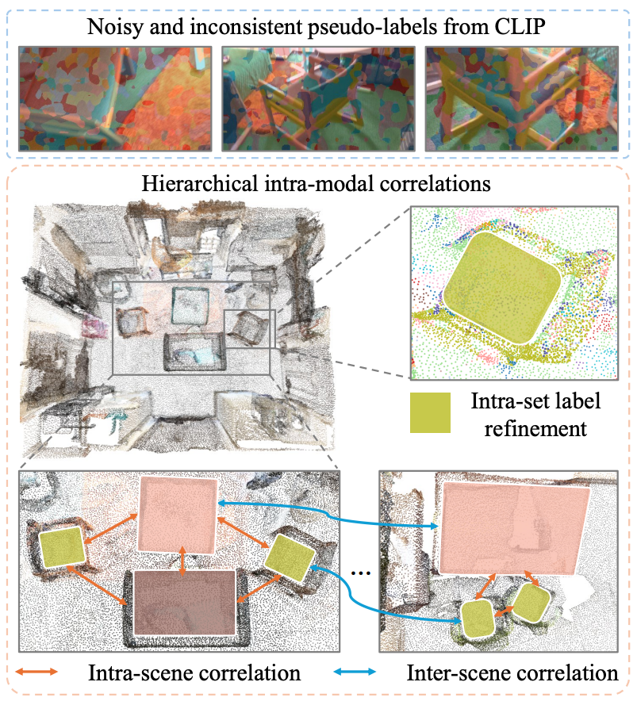
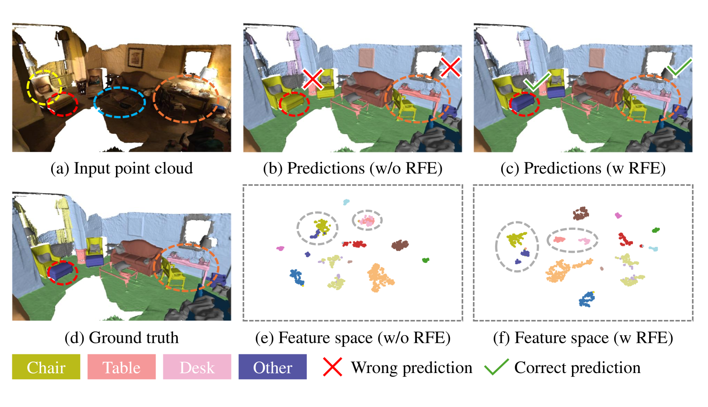

I joined NVIDIA Beijing in July 2025, where I am currently a China Solution Architect. My research focuses on 3D reconstruction algorithms for autonomous driving, feed-forward reconstruction, and vision-language-action (VLA) models. I received my Ph.D. (2020–2025) and B.Eng. (2016–2020) from the University of Science and Technology of China (USTC), advised by Prof. Xuejin Chen (陈雪锦).





